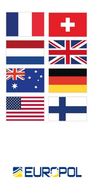

LOCKBIT
THIS ARCHIVE IS OVERSEEN AND UPDATED
BY BUGZORC UNTIL FEBRUARY 24TH 2024.
CHECK GITHUB FOR THE LATEST ARCHIVE.

Lockbit's Affiliate Infrastructure Down
The taking down of these servers required a strong coordination between the US, Netherlands, Germany, Finland, France, Switzerland, Australia and the United Kingdom. The dismantling of Lockbit was made possible through seamless cross-border cooperation, leveraging worldwide Mutual Legal Assistance Treaty (MLAT) procedures and 24/7 preservation requests facilitated by the Budapest Convention. This collaborative effort transcended geographical boundaries, as law enforcement agencies from various countries united their resources and expertise to support the disruption of the main infrastructure led by the UK’s National Crime Agency (NCA). These servers enabled both the initial cyberattacks by affiliates and supported the stealing of victim data and processing to ‘Stealbit’ servers. See ‘Stealbit down!’ article for further details.
Uploaded: 26 Jan, 2024 13:21 UTC
Updated: 26 Jan, 2024 13:21 UTC